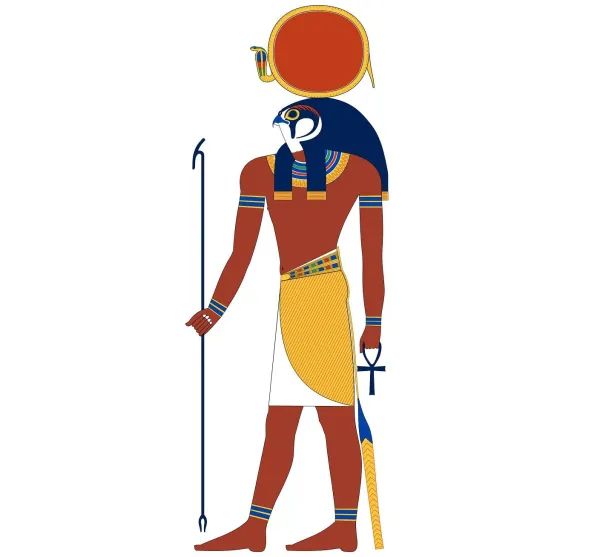
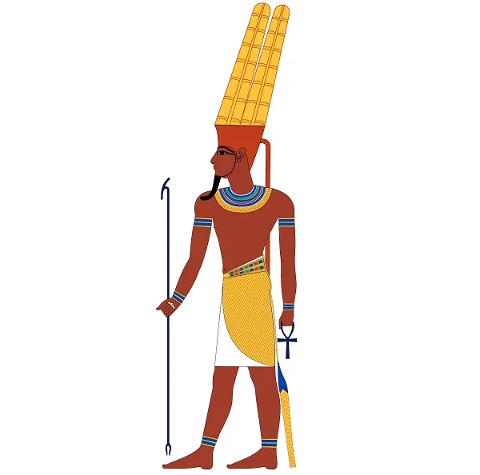
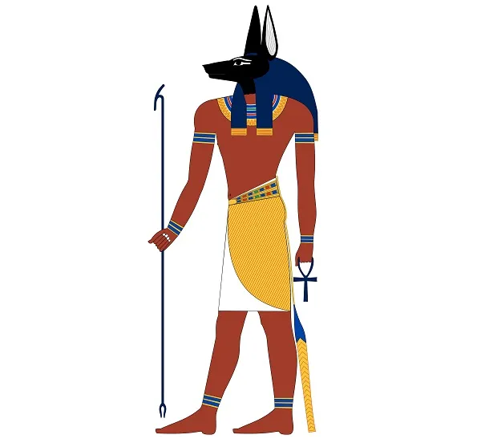
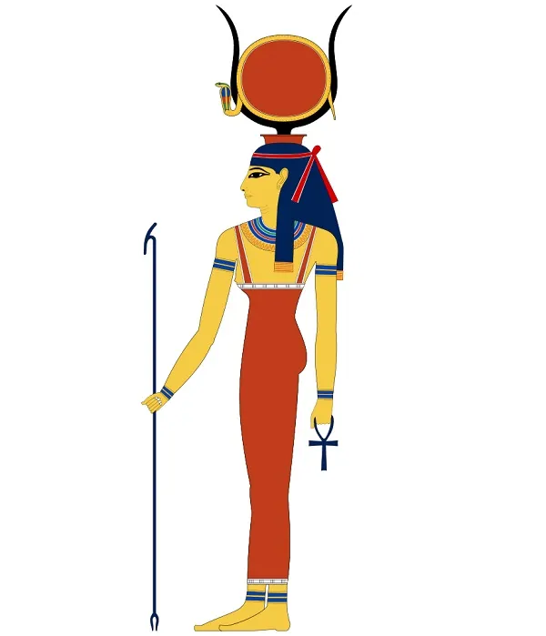
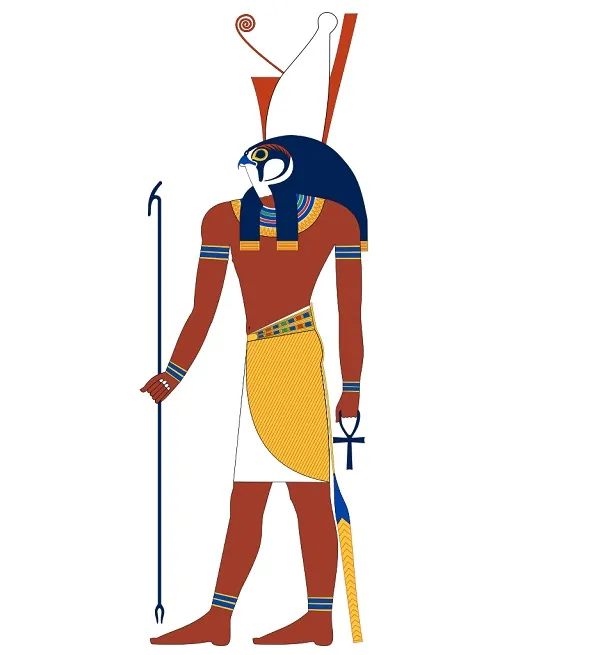
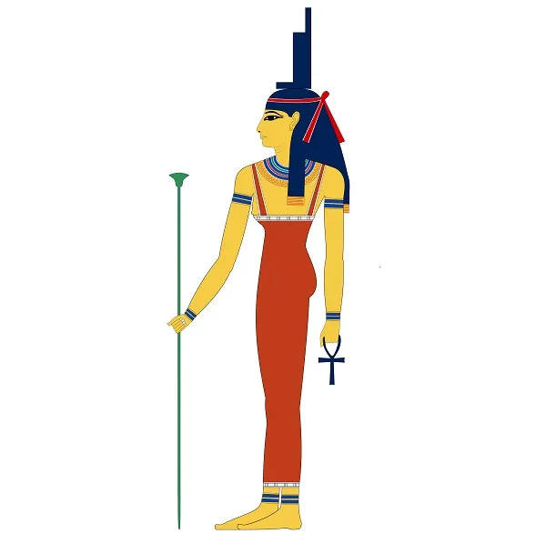
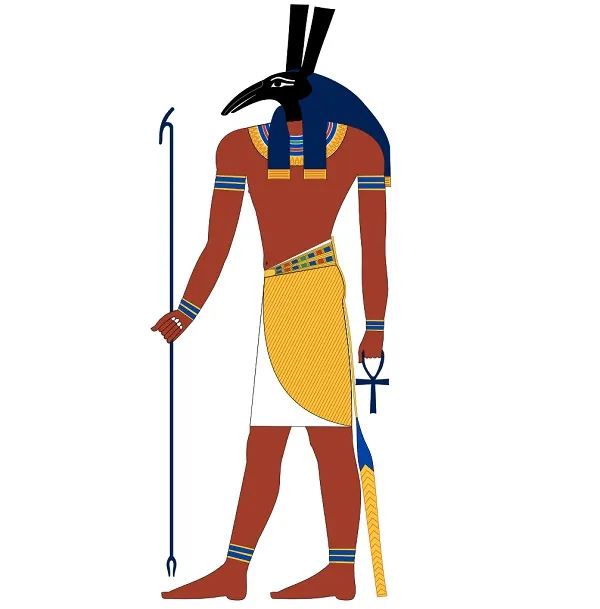

DIOSES MITOLOGÍA EGIPCIA
| DIOSES | DEFINICIÓN | FOTO |
| RA | Es el dios del sol y uno de los dioses mas conocidos hoy en dia. Era el responsable de dar vida a todo debido a su vinculación con el sol. |  |
| AMÓN | Además de ser el dios de la ciudad de Tebas, "el oculto", significado de su nombre, fue adorado durante mucho tiempo como el creador supremo y el dios más importante de los egipcios, sin embargo, acabaría siendo absorbido por Ra y convertido en Amon-Ra. Durante un periodo inicial fue conocido como el dios de los vientos, por eso muchas embarcaciones llevaban su nombre en el timón para encontrar protección durante sus viajes. |  |
| ANUBIS | Es el dios de las momificaciones. Es el sobrino de Osiris y uno de los primeros dioses del más allá, siendo conocido como "el señor de la necrópolis". Es el encargado de presidir los rituales de momificación y también de acompañar el cuerpo del difunto al más allá, guiándolo hasta su camino final. |  |
| HATHOR | Es la diosa del amor,la fiesta,la danza,etc. Su nombre significa la morada de Horus y, junto con Isis, fue una de las diosas egipcias más veneradas. Era la esposa de Horus y representaba muchas de las cosas buenas de la vida: el amor, la alegría, la música, la danza, por lo que era muy querida por los fieles. |  |
| HORUS | Horus es el dios del cielo, el hijo de Isis y Osiris quien tuvo que ser escondido por su madre pues su tío Seth también quería matarlo para impedir que heredara el trono. Se le considera como el elevado, quien lucha contra Seth para vengar lo que hizo con su padre, consiguiendo finalmente matarlo y convertirse en el dios del mundo de los vivos mientras que su padre gobernaba el mundo de los muertos. |  |
| ISIS | Hermana y esposa de Osiris, es la madre de todos los dioses y la dadora de vida. Se le consideraba la diosa de la maternidad y los nacimientos pues fue la encargada de dar vida nuevamente a Osiris después de que Seth lo descuartizara. |  |
| OSIRIS | Es uno de los principales y más importantes dioses de los egipcios.
Según decisión de su padre, este dios debía heredar el reino de la parte fértil de Egipto
mientras que su hermano Seth reinaría en la parte seca, pero este último no soportó los celos y
la envidia que esto le causaba y decidió matarlo, cortando su cuerpo en 14 trozos que esparció
por el mundo. La hermana de ambos, Isis, que luego se convertiría en la esposa de Osiris, se
encargó de reunir todos los trozos que encontró embalsamándolo para hacerlo resucitar
nuevamente. Se trata del primer indicio de momificación en esta cultura.
Se creía que una vez al año Osiris moría y resucitaba, por lo que es la deidad de la resurrección y de los muertos. Debido a que se le atribuía la responsabilidad de las crecidas del Nilo, es también un dios muy vinculado a la fertilidad y la agricultura. |
 |
| SETH | Es la personificacion del mal y la destrucción en la mitología egipcia, esto principalmente por su decisión de matar y descuartizar a su hermano. Su cabeza de extraño animal reforzaba la creencia de que era un dios oscuro, sin embargo, fue el dios del desierto ya que le tocó reinar en la parte seca de Egipto. Durante un breve período de la historia del antiguo Egipto fue considerado como un protector de las caravanas en el desierto, sin embargo mayoritariamente fue visto como el dios de las tinieblas. |  |